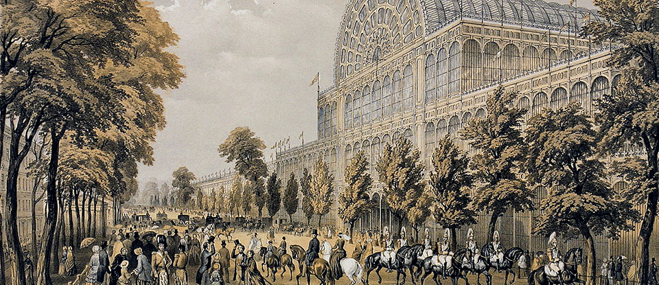
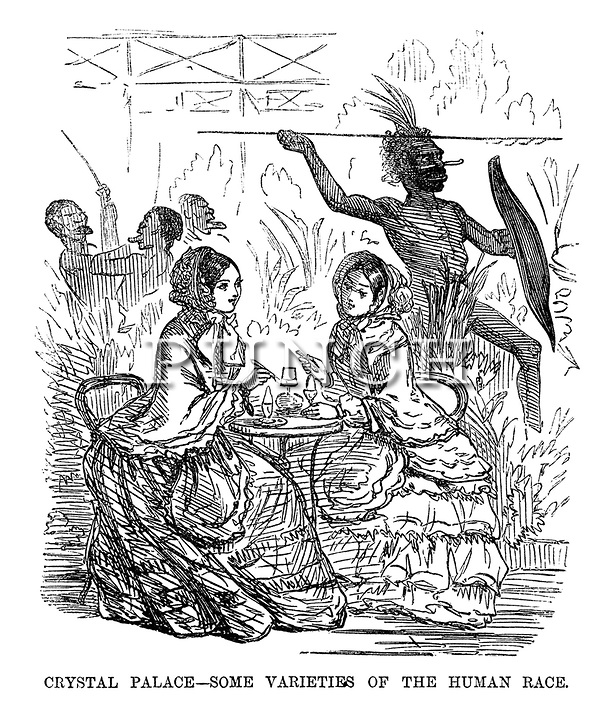
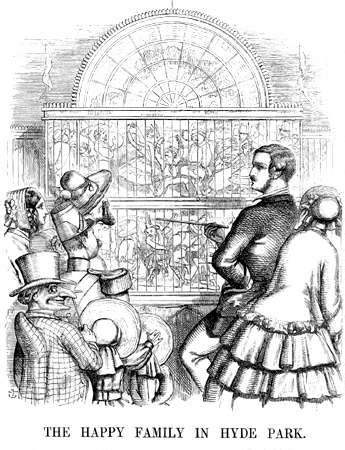
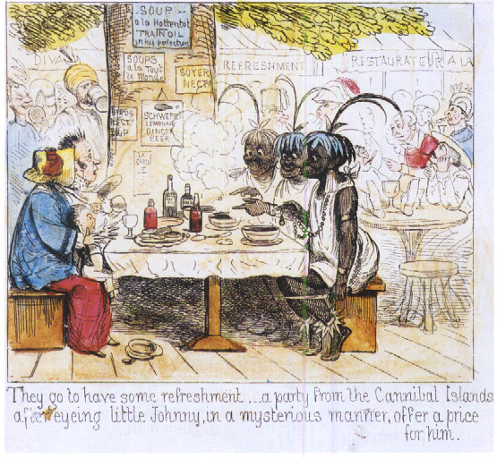
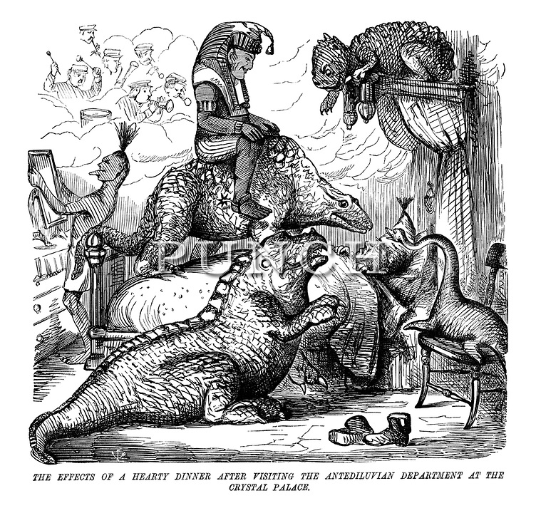

Globalization has progressed vastly since the Victorian era. Goods, languages, and ideas that once were restricted to their own regions of the world are now easily accessible, and it's not so far-fetched to, for example, order clothes from a website based in Asia or make a phone call to someone in Europe with little difficulty.
This is a privilege once restricted to the wealthiest of society, who could afford the exorbitant transportation fees and foreign correspondence. Although the British Empire was at its height during Queen Victoria's reign, the experience of the foreign was still limited to politicians, gentry, and military figures.
It was the Great Exhibition of 1851 that changed the British public's perception of the world outside of their country.
The exhibition was a spectacle inside and out; encased inside Joseph Paxton's glass Crystal Palace, the collection of artifacts inside came from colonies and countries all over the world as well as from Britain, and brought people of different cultures into London.

Six million people attended the Great Exhibition, and this exposure to foreign goods and foreign cultures sparked a lot of interest among the public. British innovations and triumphs in production were showcased.
Although I could continue on about the economic benefit, diversity, and widened perspectives that the Great Exhibition brought, my focus now is on the narrowness of perspective that many British felt at the occurrence of the exhibition.
There was much wonderment elicited by the Great Exhibition's many displays, but there was no little criticism. This is reflected by the political comics of the time; Punch, a satirical magazine, ran comics that were critical of the neglect of local trade, deflection from parliamentary issues, and, very prominently, people of different ethnicities.


In these cartoons, foreigners are caricatured, often shown with animal-like features and drastic fashion choices. The colored comic on the bottom left assumes the foreigners are cannibals.


Perhaps there's nothing shocking about this characterization, to the modern viewer, but that begs a question of the modern perception of the past.